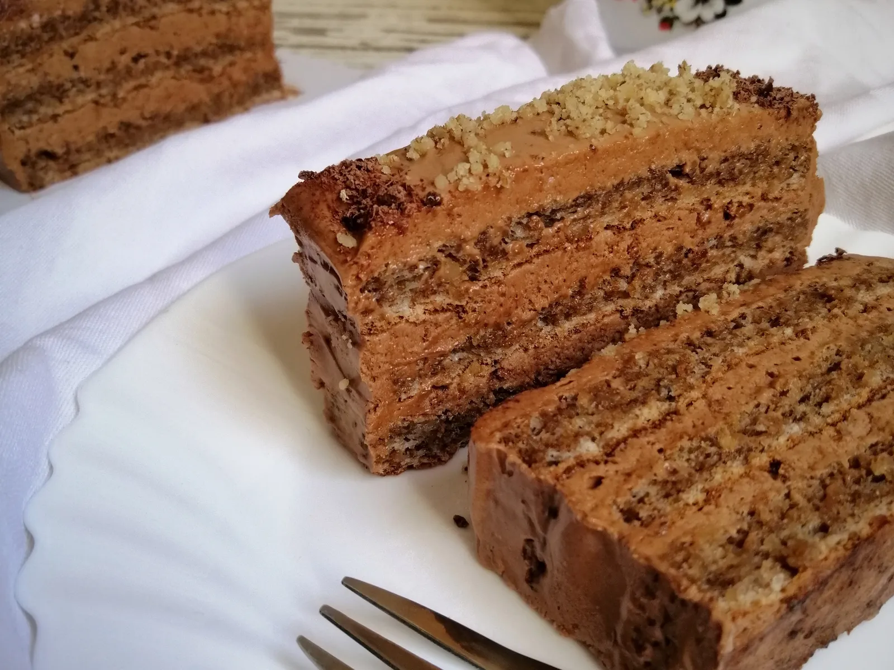

Home
Reform Cake

Description
The Reform Cake (Reform Torta) is an elegant, traditional Serbian dessert
celebrated for its luxurious, yet surprisingly light texture. The cake is
defined by the contrast between its two main components: crisp, airy
meringue layers made primarily from walnuts and egg whites (making them
largely flourless), and a decadent, silky smooth chocolate cream based on
cooked egg yolks.
The cream is the star, prepared by cooking the yolks and sugar over steam
(bain-marie) until perfectly thickened, then enriched with high-quality
chocolate and whipped butter. This process results in an incredibly
smooth, rich filling that melts instantly in the mouth. The cake is
typically built with three or four alternating layers of the nutty crust
and the rich cream, often finished with a final chocolate glaze. The
Reform Cake is a symbol of celebrations and holidays due to its
sophisticated, intense walnut and chocolate flavor.
Ingredients
For the Crusts (Repeat 3 times for 3 layers)
- 4 Egg Whites
- 4 tbsp Sugar
- 4 tbsp Ground Walnuts
- 1 tbsp Flour
For the Cream Filling
- 12 Egg Yolks
- 150 g Sugar
- 100 g Cooking Chocolate (min. 50% cocoa solids)
- 200 g Butter (softened to room temperature)
Preparation
-
Prepare the Crusts (Repeat 3 times): Beat the egg whites until stiff
peaks form, gradually adding the sugar until the meringue is firm and
glossy. Gently fold in the ground walnuts and flour. Pour the mixture
into a springform pan (20-22 cm) lined with parchment paper and bake at
180 °C (350 °F) for about 15–20 minutes. Let the crusts cool completely.
-
Cook the Cream: Combine the egg yolks and sugar in a bowl and cook over
a double boiler (bain-marie), stirring constantly. The cream is ready
when it thickens significantly (about 15–20 minutes).
-
Add Chocolate: Remove the thickened cream from the heat and stir in the
broken-up chocolate until it is completely melted and smooth. Let the
cream cool down to room temperature.
-
Finish the Cream: Beat the softened butter until fluffy. Gradually add
the cooled chocolate-yolk mixture, beating until you get a smooth, airy,
and uniform cream.
-
Assemble: Place one cooled crust on your serving plate. Spread one-third
of the cream evenly over the crust. Top with the second crust and
repeat. Finish with the third crust and cover the entire cake with the
remaining cream or a chocolate glaze.
-
Chill the cake thoroughly in the refrigerator (ideally overnight) to
allow the crusts to soften and the cake to set completely.